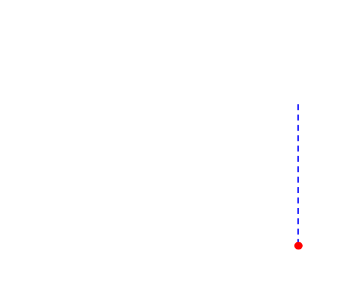
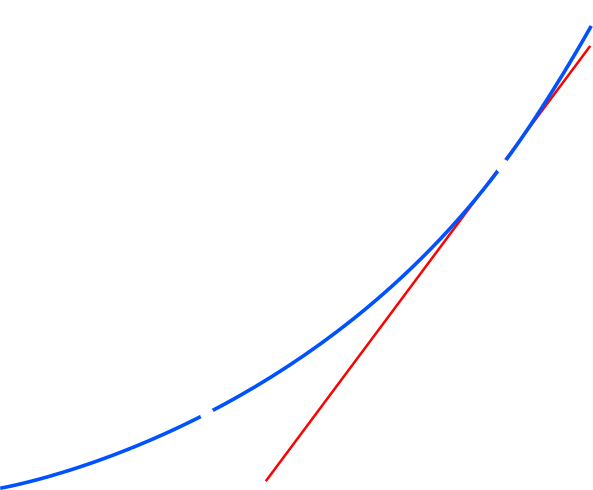
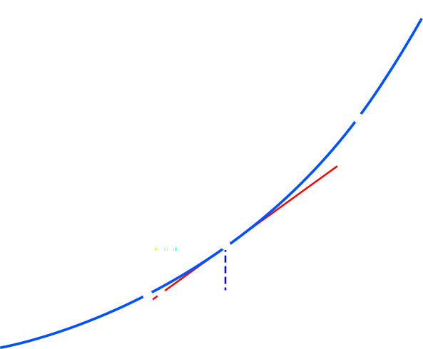
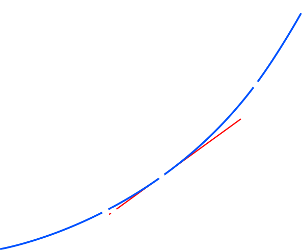

1.7320508075688772Section 1.4.3
La méthode de Newton

Rappels
Nous étudions des méthodes numériques pour estimer un zéro \(\bar{x}\) d’une fonction réelle et non linéaire \(f\).
La dernière fois, nous avons étudié une famille de méthodes en général: les méthodes de point fixe. Il s’agit de choisir une fonction \(g\), telle que
\[f(\bar{x}) = 0 \iff g(\bar{x})=\bar{x}\]et de chercher un point fixe de \(g\). On appelle \(g\) la fonction d’itération.
On procède par la méthode de Picard: on établit une estimation initiale de \(\bar{x}\), notée \(x_0\), puis on applique itérativement la fonction \(g\) sur cette estimation pour produire les nombres \[x_{n+1}:=g(x_{n}).\] L’espoir est que la suite \((x_{n}), n \in ℕ\), converge vers \(\bar{x}\) quand \(n \to \infty\).
Aujourd’hui, nous allons étudier un exemple spécifique de méthode de point fixe : la méthode de Newton. Il s’agit d’une méthode puissante car elle peut converger rapidement (comme nous le verrons), mais elle exige aussi que certaines conditions soient remplies, nous détaillerons ces conditions au fur et à mesure qu’elles se présenteront. Pour le moment, nous supposons seulement que \(f\) est \(C^1\).
Présentation graphique de la méthode






\(\bar{x}\) — le zéro recherché \(x_0\) — l’approximation initiale
Fonction d’itération
Comme la pente \(= \frac{\Delta_{y}}{\Delta_{x}}\), nous avons \[ f'(x)=\frac{f(x)}{(x-g(x))}, \] ce qui, après isolation de \(g(x)\), donne \[ \boxed{g(x) = x - \frac{f(x)}{f'(x)}.} \]
Remarque
Pour isoler \(g(x)\) ainsi, il faut que \(f'(x)\neq 0\), ce qui nous donne notre première condition sur \(f\): qu’il existe un voisinage (épointé) de \(\bar{x}\) tel que \(f'(x)\neq 0\). Le plus souvent, cette condition est remplie en exigeant que \(f'(\bar{x}) \neq 0\) (c’est-à-dire que \(\bar{x}\) est un zéro simple).
Pour isoler \(g(x)\) ainsi, il faut que \(f'(x)\neq 0\), ce qui nous donne notre première condition sur \(f\): qu’il existe un voisinage (épointé) de \(\bar{x}\) tel que \(f'(x)\neq 0\). Le plus souvent, cette condition est remplie en exigeant que \(f'(\bar{x}) \neq 0\) (c’est-à-dire que \(\bar{x}\) est un zéro simple).
Condition d’arrêt
Nous avons vu que pour une méthode de point fixe avec une fonction d’itération \(g\) qui est \(C^1\), il existe, \(\forall n \in ℕ^*\), \(\xi_{n}\) entre \(\bar{x}\) et \(x_n\) tel que,
\[ \boxed{\bar{x} - x_{n} = \frac{1}{1-g'(\xi_n)}(x_{n+1}-x_n).}\]
Nous avons conclu alors que \(|x_{n+1}-x_n|\) estime bien l’erreur tant que \(g'(\xi_n)\) n’est pas proche de 1.
Comme, pour la méthode de Newton,
\[g(x) = x - \frac{f(x)}{f'(x)},\]
une manière de garantir que \(g\) est \(C^1\) est de supposer que \(f\) est \(C^2\), ce qui donne une deuxième condition sur \(f\). Sous cette condition, nous avons donc que
\[g'(x) = 1 - \frac{f'(x)^2 - f(x)\,f''(x)}{f'(x)^2} \in C^0.\]
Par conséquent, \(g'(\bar{x})=0\) et par continuité \(g'(x)\approx 0\) dans un voisinage de \(\bar{x}\). Nous pouvons donc utiliser en toute sécurité une borne sur \(|x_{n+1}-x_n|\) pour définir notre condition d’arrêt.
Résumé sur les conditions
Pour l’instant nous avons identifié deux conditions pour que la méthode de Newton fonctionne bien.
- Condition (A) : Il existe un voisinage (épointé) de \(\bar{x}\) tel que \(f'(x)\neq 0\)
- Condition (B) : \(f\) est \(C^2\)
Exercice.
Utiliser les résultats du dernier cours pour montrer que, sous les conditions (A) et (B), la méthode de Newton converge (au moins) linéairement vers une solution pour tout \(x_0\) suffisamment proche de \(\bar{x}\).
Utiliser les résultats du dernier cours pour montrer que, sous les conditions (A) et (B), la méthode de Newton converge (au moins) linéairement vers une solution pour tout \(x_0\) suffisamment proche de \(\bar{x}\).
Nous avons également discuté d’une variante légèrement plus forte de la condition (A).
• Condition (A’) : \(f'(\bar{x})\neq 0\) (c’est-à-dire que \(\bar{x}\) est un zéro simple)
Dans le prochain cours, nous verrons un théorème qui montre que la méthode de Newton fonctionne au mieux lorsque (A’) et (B) sont toutes deux satisfaites: elles garantissent alors une convergence quadratique.
Implémentation Python
Nous commençons par fixer les paramètres de notre implémentation,
# Définir la fonction dont on veut trouver le zéro
def f(x):
return x**2 - 3
# Définir la dérivée de cette fonction
def df(x):
return 2*x
# Définir l'estimation initiale pour le zéro
x0 = 1.5
# Définir le seuil de tolérance pour la convergence
tol = 1e-10
# Définir une variable pour compter le nombre d'iteration appliquées
i = 0
Remarque
Ici, nous avons une expression analytique pour la dérivée de \(f\). Si ce n’était pas le cas, une évaluation numérique serait nécessaire, ceci compliquerait l’application de la méthode.
Ici, nous avons une expression analytique pour la dérivée de \(f\). Si ce n’était pas le cas, une évaluation numérique serait nécessaire, ceci compliquerait l’application de la méthode.
Implémentation Python
# Itérer la méthode de Newton jusqu'à ce que notre condition soit remplie
while True:
# Appliquer la fonction d'itération : x1 = g(x0)
x1 = x0 - f(x0) / df(x0)
i += 1
# Vérifier si la distance entre les approximations est inférieure au seuil
if abs(x1 - x0) < tol:
break
x0 = x1
print("Le zéro de la fonction est approximativement", x0)
print("({0} itérations)".format(i))Le zéro de la fonction est approximativement 1.7320508075688772
(5 itérations)Ce qui est une approximation parfaitement respectable:
Une mise en garde
def f(x):
return x**3 - 3*x**2 - 1
def df(x):
return 3*x**2 - 6*x
x0 = 2
tol = 1e-10
while True:
x1 = x0 - f(x0) / df(x0)
if abs(x1 - x0) < tol:
break
x0 = x1
print("Le zéro de la fonction est approximativement", x0)ZeroDivisionError: division by zero
Il faut néanmoins être prudent dans le choix de \(x_0\)!